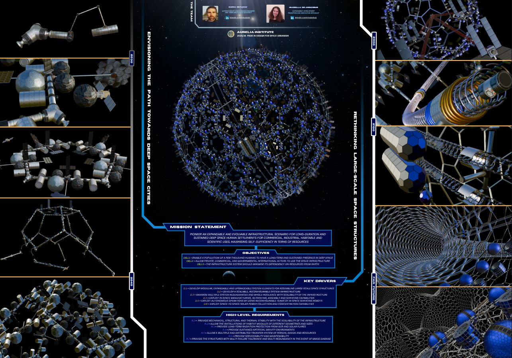

Envisioning the path towards Deep Space Cities rethinking large-scale space structures | February 2026
This work present the vision of a roadmap towards the creation of self-sufficient deep space cities in the Sun-Earth lagrangian points. Developed for the 2026 Aurelia Prize in Design for Space Urbanism, the project aimed at design a preliminary concept study of long-term phases for human settlements in deep space
